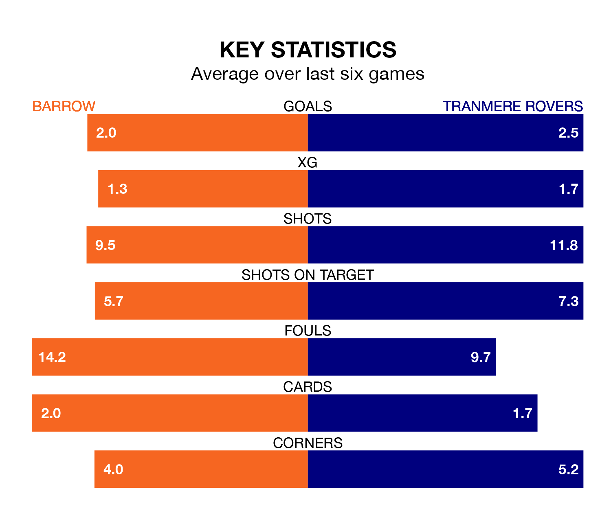

Barrow host Tranmere Rovers in Saturday's match at the SO Legal Stadium looking to bounce back from defeat last time out in EFL League Two.
The Bluebirds, who sit fourth in the league after 25 games, fell to a 4-1 away defeat to Wrexham on Monday.
They face a Tranmere side who picked up a win in their last match, a 4-2 victory against Notts County, and who sit 15th in the table.
With 42 goals in 26 games so far this season, Tranmere are scoring more than average in the league with 1.6 goals per game. And they are conceding at an average rate, letting in 39 goals at a rate of 1.5 per game.
Barrow, meanwhile, are average scorers, with 1.5 goals per game. They have conceded 1.0 goal per game.
The Bluebirds are in reasonable form in EFL League Two, with three wins and two draws from their last six games.
With five wins and one loss over that period, Rovers' form is better – they have taken 15 points from 18, compared to the home side's 11.
With Paul Farman between the sticks, Barrow can rely on one of the league's safest pair of hands. He has kept eight clean sheets in his 23 appearances this season in EFL League Two.
In the visitors' net, Luke McGee has four clean sheets in 25 games. He has conceded a goal every 65 minutes, 50% more often than the 99 minutes between goals for Farman.
In the last five years, Barrow and Tranmere have played each other on seven occasions. Barrow won one of them, Tranmere four, and they drew twice.
On average, the Bluebirds scored 0.7 goals and Tranmere 1.3 in those matches.
Their last meeting was on August 5, when Barrow won 2-1 away.
Updated: 10:36, 03/01/24